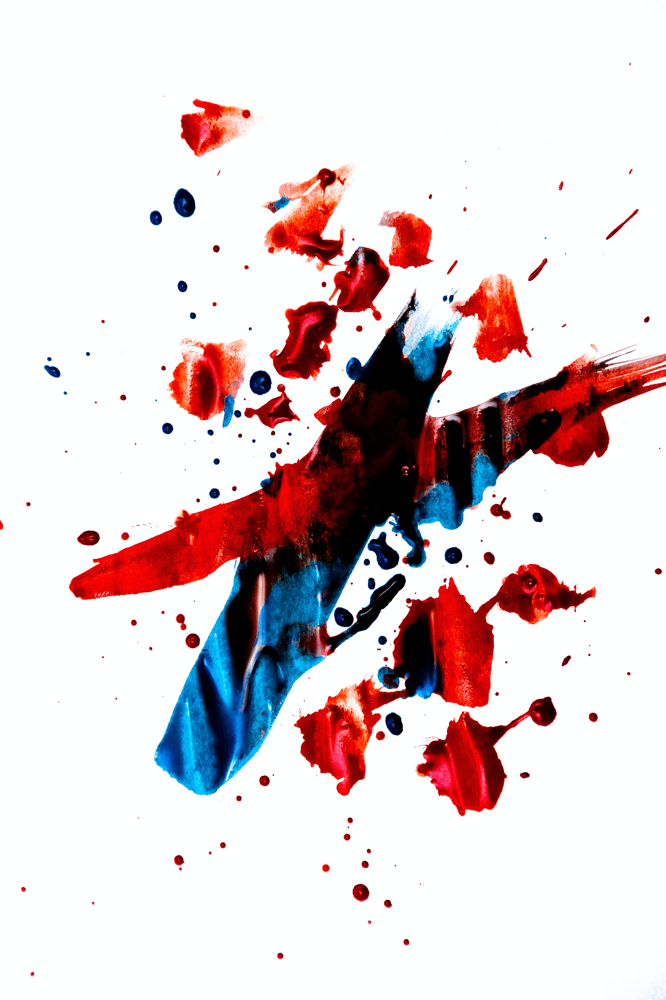

주기적으로 기본 공격을 강화하는 패시브.
효과가 준비되면 검에서 빛이 나고 아트록스가 검을 고쳐쥐며 찌르는 동작으로 공격한다.
강화된 기본 공격은 사거리가 50만큼 증가하고 대상에게 최대 체력 비례 물리 피해를 입히며 입힌 피해량만큼 아트록스의 체력이 회복된다.
쿨타임은 레벨 비례로 감소하며, 기본 공격과 스킬을 적중시키면 2초, 검 끝으로 적중시키면 4초를 감소시킬 수 있다.
